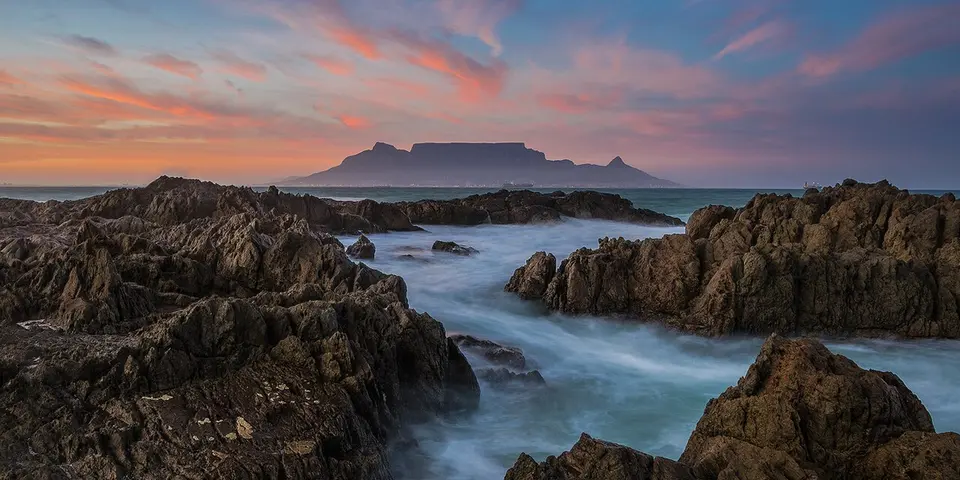

Sub-Saharan Africa
South Africa on a budget
Hike Table Mountain in Cape Town, drive the Garden Route, climb into the Drakensberg and self-drive safari in Kruger. South Africa has great hostels and is easy on a budget.
Photo: Brendon Wainwright, CC BY-SA 3.0, via Wikimedia Commons

Classic route
Cape Town, the Garden Route, Drakensberg and Kruger. 3 weeks.
Before you go
Flights to Cape Town: Skyscanner · Kiwi.com · Google Flights
Hostels and guesthouses in Cape Town · Garden Route · Kruger National Park · Johannesburg
Tours and tickets: Cape Town · Garden Route
Mobile data: South Africa eSIM
Travel insurance: SafetyWing
How much 28 places in South Africa cost
Daily budgets per person in US dollars: a hostel dorm or simple guesthouse, local food, local transport and the usual entry fees.
-
Cape Town
Climb Table Mountain, drive out to Cape Point's penguins and cliffs, and wander the candy-colored houses of Bo-Kaap.
Bed $22 · Food $14 · Getting around $6 · Extras $6
Budget tip: Hike Table Mountain instead of taking the cable car. Platteklip Gorge is the classic route; go early, with water and a friend.
$48per day -
Garden Route
Coastal forests, lagoons and wild beaches line this famous road trip, home to the multi-day Otter Trail hike and Tsitsikamma's suspension bridge.
Bed $20 · Food $14 · Getting around $12 · Extras $6
Budget tip: The Baz Bus hop-on service links hostels along the route. Book the Otter Trail months ahead, as permits sell out.
$52per day -
Kruger National Park
Self-drive safaris with all of the Big Five, from sunrise game drives to braai dinners at fenced rest camps.
Bed $22 · Food $14 · Getting around $25 · Extras $30
Budget tip: Rent a car and stay in park campsites. Bring your own food from a supermarket outside the gate, as camp shops are pricier.
$91per day -
Johannesburg
Face history at the Apartheid Museum and in Soweto, then eat and browse in the street art and markets of Maboneng.
Bed $22 · Food $14 · Getting around $8 · Extras $8
Budget tip: Use the Gautrain from the airport and app taxis at night. Join a Soweto bike tour for a cheap, local-led way to see the township.
$52per day -
Drakensberg
Hike beneath the towering Amphitheatre cliffs, find ancient San rock art in sandstone shelters and cool off in mountain streams.
Bed $18 · Food $12 · Getting around $10 · Extras $5
Budget tip: Hike the Tugela Falls chain ladders from Sentinel car park. Hostels at the foot of the range offer cheap shuttles to the trailheads.
$45per day -
Coffee Bay
A Wild Coast village of green hills and cliffs, with coastal hikes to the Hole in the Wall rock arch.
Bed $17 · Food $12 · Getting around $8 · Extras $4
Budget tip: Hostels run cheap guided hikes with Xhosa guides. The shuttle from Mthatha saves time over minibus taxis.
$41per day -
Port St Johns
Wild Coast town on the Umzimvubu River with jungle-backed beaches, cliff hikes, the Gap blowhole and a laid-back river mouth scene.
Bed $15 · Food $12 · Getting around $10 · Extras $4
Budget tip: Minibus taxis from Mthatha are cheapest. Hike to Silaka Nature Reserve independently, and stay in hostels on Second Beach.
$41per day -
Durban
A warm-water surf city with a long beachfront promenade and fiery Indian curries, including the city's famous bunny chow.
Bed $20 · Food $12 · Getting around $6 · Extras $4
Budget tip: A quarter bunny chow is a cheap, filling meal. Stay near Florida Road for hostels, bars and restaurants.
$42per day -
Gqeberha
Windy coastal city formerly called Port Elizabeth, with Donkin Reserve, the Route 67 art trail, beaches at Summerstrand and quick access to Addo.
Bed $20 · Food $12 · Getting around $6 · Extras $4
Budget tip: Walk the free Route 67 art trail through the city centre, and share car hire with other travellers for Addo day trips.
$42per day -
Hogsback
Misty mountain village of indigenous forest, waterfalls like the Madonna and Child, quirky hostels and storybook gardens in the Amathole Mountains.
Bed $16 · Food $12 · Getting around $10 · Extras $4
Budget tip: Forest walks and waterfall trails are mostly free. Stock up on groceries in Alice or East London, as village shops are small and pricier.
$42per day -
Pretoria
Administrative capital lined with jacaranda trees, home to the Union Buildings, the Voortrekker Monument and the Freedom Park memorial.
Bed $20 · Food $12 · Getting around $6 · Extras $5
Budget tip: Visit in October or November for jacaranda blooms. The Gautrain from Johannesburg is fast and avoids traffic, and the Union Buildings gardens are free.
$43per day -
Graaff-Reinet
A historic Karoo town of Cape Dutch houses beside the Valley of Desolation, where dolerite rock columns rise above the plains.
Bed $18 · Food $12 · Getting around $10 · Extras $4
Budget tip: Drive up to the valley at sunset for the views. Guesthouses here are cheap compared to the coast.
$44per day -
Hermanus
Southern right whales breach and blow close to shore from June to November, seen from clifftop paths above the bay.
Bed $22 · Food $14 · Getting around $8 · Extras $2
Budget tip: The clifftop path is free and the best way to see the whales. Skip paid boat trips if you're watching your budget.
$46per day -
Jeffreys Bay
Surf town with the famous Supertubes right-hand break, long sandy beaches, surf shops and dolphins often spotted from the shore.
Bed $18 · Food $12 · Getting around $6 · Extras $10
Budget tip: Rent boards weekly rather than daily. Watch the surf from Supertubes deck for free, and travel outside the July surf competition for cheaper beds.
$46per day -
Clarens
Free State village with art galleries and craft beer below golden sandstone cliffs, a short drive from Golden Gate Highlands National Park.
Bed $18 · Food $12 · Getting around $10 · Extras $6
Budget tip: Hike Golden Gate trails on a day permit instead of joining tours. Stay in budget guesthouses off the main square, and visit on weekdays.
$46per day -
Blyde River Canyon
One of the largest canyons on Earth, with God's Window, Bourke's Luck Potholes and the Three Rondavels peaks.
Bed $18 · Food $12 · Getting around $12 · Extras $5
Budget tip: Do the Panorama Route on your way to Kruger. Stay in Graskop for cheaper beds and its famous pancakes.
$47per day -
Cederberg
Orange sandstone peaks, ancient San rock art and a hike to the Wolfberg Arch in a wild mountain wilderness.
Bed $17 · Food $12 · Getting around $12 · Extras $8
Budget tip: Camp at the CapeNature sites. Hiking permits are cheap, and the Wolfberg Cracks climb is free once you have one.
$49per day -
Oudtshoorn
Klein Karoo town of ostrich farms, sandstone mansions and the vast limestone chambers of the Cango Caves, near Swartberg Pass views.
Bed $18 · Food $12 · Getting around $8 · Extras $12
Budget tip: Book the standard Cango Caves tour online. Drive or cycle Swartberg Pass for free, and try ostrich burgers at local diners.
$50per day -
Tsitsikamma
Coastal park of cliffs, forest and the Storms River suspension bridge, starting point of the five-day Otter Trail hike.
Bed $18 · Food $12 · Getting around $10 · Extras $15
Budget tip: Camp or use forest huts in the park. Book the Otter Trail far ahead, and walk the free Waterfall Trail section with a day permit.
$55per day -
Stellenbosch
Oak-lined streets, gabled Cape Dutch buildings and dozens of wine farms set beneath dramatic mountains.
Bed $22 · Food $16 · Getting around $8 · Extras $10
Budget tip: Many tastings cost under $10. Cycle between farms or use the hop-on hop-off wine tram or bus to save on taxis.
$56per day -
Franschhoek
Valley town of Huguenot heritage surrounded by vineyards and mountains, known for the Wine Tram, wine tastings and celebrated restaurants.
Bed $22 · Food $16 · Getting around $8 · Extras $12
Budget tip: Choose a self-guided bicycle route between wine farms instead of the Wine Tram, and lunch on picnic platters rather than tasting menus.
$58per day -
iSimangaliso & St Lucia
Hippos and crocodiles in the St Lucia estuary, with loggerhead and leatherback turtles nesting on the beaches in summer.
Bed $20 · Food $12 · Getting around $12 · Extras $15
Budget tip: Take a cheap estuary boat trip to see the hippos. Self-drive into the park on the Eastern Shores instead of booking a tour.
$59per day -
Namaqualand
Arid northwest region that bursts into carpets of orange, purple and white wildflowers each spring, best seen in Namaqua National Park.
Bed $18 · Food $12 · Getting around $25 · Extras $6
Budget tip: Flower season runs roughly August to September; book rooms in Springbok or Kamieskroon early. Flowers open around midday on sunny days.
$61per day -
Augrabies Falls
Orange River thundering through a deep granite gorge, with boardwalk viewpoints, klipspringers and the multi-day Klipspringer hiking trail.
Bed $18 · Food $12 · Getting around $25 · Extras $8
Budget tip: Camp in the park and walk the free boardwalks. Visit after summer rains for the strongest flow, and combine with Kgalagadi on one road trip.
$63per day -
Pilanesberg
Ancient volcanic crater reserve with all the Big Five, scenic loops, hides overlooking waterholes and easy reach from Johannesburg.
Bed $20 · Food $12 · Getting around $20 · Extras $20
Budget tip: Self-drive with a rental car rather than paying for guided drives. Arrive at gate opening for the best game sightings and stay at Manyane camp.
$72per day -
Hluhluwe-iMfolozi
Oldest proclaimed reserve in Africa, famous for white and black rhinos, hilly bushveld, elephants and wilderness trails in KwaZulu-Natal.
Bed $22 · Food $12 · Getting around $20 · Extras $20
Budget tip: Combine it with St Lucia to share car rental costs. Self-catering chalets at Hilltop Camp are cheaper than private lodges.
$74per day -
Addo Elephant Park
Hundreds of elephants crowd waterholes in a malaria-free park, along with lions, buffalo and the famous flightless dung beetle.
Bed $22 · Food $14 · Getting around $19 · Extras $20
Budget tip: Self-drive with a hire car. The park restaurant and campsites are good value.
$75per day -
Kgalagadi Transfrontier Park
Red Kalahari dunes and dry riverbeds shared with Botswana, renowned for black-maned lions, cheetahs, raptors and huge desert skies.
Bed $18 · Food $12 · Getting around $30 · Extras $15
Budget tip: Book SANParks camps months ahead. Bring all supplies from Upington, carry extra fuel and water, and stay at least three nights.
$75per day
Know before you go
South Africa on a budget: the basics
Currency
$1 = 16.66 ZAR
South African rand
| Dollars to ZAR | ZAR to dollars | ||
|---|---|---|---|
| $1 | 16.66 ZAR | 10 ZAR | $0.6 |
| $5 | 83.29 ZAR | 50 ZAR | $3.00 |
| $10 | 167 ZAR | 100 ZAR | $6.00 |
| $20 | 333 ZAR | 500 ZAR | $30.01 |
| $50 | 833 ZAR | 1,000 ZAR | $60.03 |
| $100 | 1,666 ZAR | 5,000 ZAR | $300 |
A typical day here (about $52) is roughly 870 ZAR.
Mid-market rate on 2026-10-05. Cash machines and exchange desks pay a little less.
Getting around
Baz Bus is a hop-on hop-off service built for budget travelers on the Garden Route, and Intercape coaches link major cities. Uber and Bolt work in all large cities and are the safer choice at night. A rental car makes the Drakensberg and Kruger far easier, and cheap domestic flights save long drives.
Where to sleep
South Africa has many good hostels, especially in Cape Town and along the Garden Route. SANParks campsites and huts in Kruger are cheap but book out early, especially in school holidays.
What to eat
- Bunny chow: hollowed-out bread loaf filled with curry, from Durban
- Bobotie: spiced minced meat baked with an egg topping
- Biltong: air-dried spiced meat, sold everywhere as a snack
- Braai: South African barbecue, usually with boerewors sausage
Money
Cards work almost everywhere, and ATMs are common, but use ones inside malls or banks. Tip about 10 to 15 percent in restaurants, and give car guards a few rand.
Phone data
Vodacom and MTN SIMs need RICA registration with your passport and an address, and coverage is good in cities and along main roads.
Heads up
Avoid walking alone after dark in cities and keep phones out of sight, using ride-hailing for evening trips.
South Africa travel: quick answers
How much does a day in South Africa cost on a budget?
About $52 a day for one person, from $41 in Coffee Bay to $91 in Kruger National Park. That covers a hostel dorm or simple guesthouse, local food, local transport and the usual entry fees, so a week runs about $364 before flights.
When is the best time to visit South Africa?
October to April is the best time, with the most reliable weather for getting around.
What is the cheapest place to visit in South Africa?
Coffee Bay, at about $41 a day. A Wild Coast village of green hills and cliffs, with coastal hikes to the Hole in the Wall rock arch.
How long do you need in South Africa?
Cape Town, the Garden Route, Drakensberg and Kruger. 3 weeks.
How much is $1 in South Africa?
One US dollar is about 16.66 South African rand (ZAR), going by the mid-market rate on 2026-10-05. So $20 is roughly 333 ZAR, and a typical budget day of $52 comes to about 870 ZAR.
How do you get around South Africa cheaply?
Baz Bus is a hop-on hop-off service built for budget travelers on the Garden Route, and Intercape coaches link major cities. Uber and Bolt work in all large cities and are the safer choice at night. A rental car makes the Drakensberg and Kruger far easier, and cheap domestic flights save long drives.
What food should you try in South Africa?
Bunny chow, hollowed-out bread loaf filled with curry, from Durban. Bobotie, spiced minced meat baked with an egg topping. Biltong, air-dried spiced meat, sold everywhere as a snack. Braai, South African barbecue, usually with boerewors sausage.
Planning around the seasons? See where to go in October, or compare the cheapest countries nearby.
Itineraries through South Africa
- Cape Town and Garden Route 16 days · $2,042
Similar budgets nearby
- Mozambique $54/day
- Mauritius $50/day
- Angola $48/day
- Cape Verde $45/day